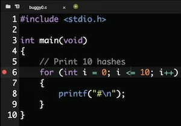
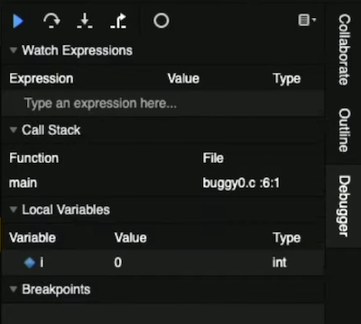
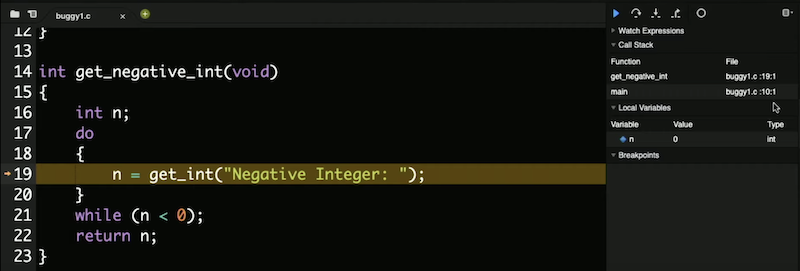
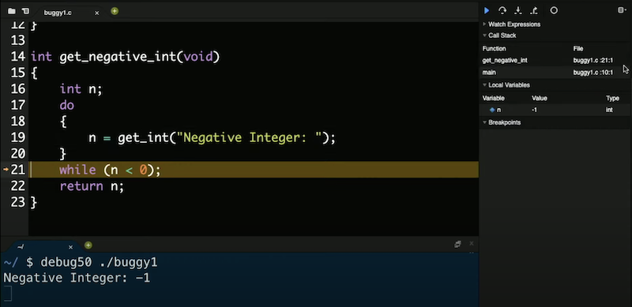
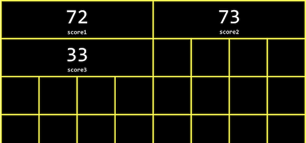
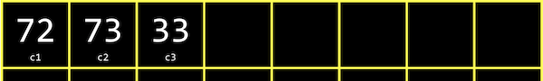
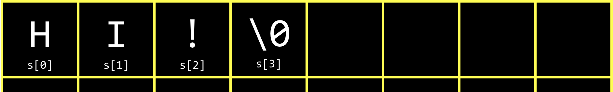
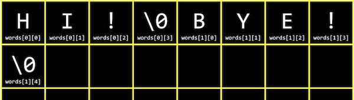

Lecture 2
Compiling
- Last time, we learned to write our first program in C, printing “hello, world” to the screen.
- We compiled it with
make hellofirst, turning our source code into machine code before we could run the compiled program with./hello. makeis actually just a program that callsclang, a compiler, with options. We could compile our source code file,hello.c, ourselves by running the commandclang hello.c. Nothing seems to happen, which means there were no errors. And if we runls, now we see ana.outfile in our directory. The filename is still the default, so we can actually run a more specific command:clang -o hello hello.c.- We’ve added another command-line argument, or an input to a program on the command-line as extra words after the program’s name.
clangis the name of the program, and-o,hello, andhello.care additional arguments. We’re tellingclangto usehelloas the output filename, and usehello.cas the source code. Now, we can seehellobeing created as output. - If we wanted to use CS50’s library, via
#include <cs50.h>, for theget_stringfunction, we also have to add a flag:clang -o hello hello.c -lcs50:#include <cs50.h> #include <stdio.h> int main(void) { string name = get_string("What's your name? "); printf("hello, %s\n", name); }- The
-lflag links thecs50file, which is already installed in the CS50 IDE, and includes the machine code forget_string(among other functions) that our program can then refer to and use as well.
- The
- With
make, these arguments are generated for us since the staff has configuredmakein the CS50 IDE already as well. - Compiling source code into machine code is actually made up of smaller steps:
- preprocessing
- compiling
- assembling
- linking
- Preprocessing generally involves lines that start with a
#, like#include. For example,#include <cs50.h>will tellclangto look for that header file, since it contains content that we want to include in our program. Then,clangwill essentially replace the contents of those header files into our program. - For example …
#include <cs50.h> #include <stdio.h> int main(void) { string name = get_string("What's your name? "); printf("hello, %s\n", name); } - … will be preprocessed into:
... string get_string(string prompt); int printf(string format, ...); ... int main(void) { string name = get_string("Name: "); printf("hello, %s\n", name); } - This includes the prototypes of all the functions from those libraries we included, so we can then use them in our code.
- Compiling takes our source code, in C, and converts it to another type of source code called assembly code, which looks like this:
... main: # @main .cfi_startproc # BB#0: pushq %rbp .Ltmp0: .cfi_def_cfa_offset 16 .Ltmp1: .cfi_offset %rbp, -16 movq %rsp, %rbp .Ltmp2: .cfi_def_cfa_register %rbp subq $16, %rsp xorl %eax, %eax movl %eax, %edi movabsq $.L.str, %rsi movb $0, %al callq get_string movabsq $.L.str.1, %rdi movq %rax, -8(%rbp) movq -8(%rbp), %rsi movb $0, %al callq printf ...- These instructions are lower-level and is closer to the binary instructions that a computer’s processor can directly understand. They generally operate on bytes themselves, as opposed to abstractions like variable names.
- The next step is to take the assembly code and translate it to instructions in binary by assembling it. The instructions in binary are called machine code, which a computer’s CPU can run directly.
- The last step is linking, where previously compiled versions of libraries that we included earlier, like
cs50.c, are actually combined with the binary of our program. So we end up with one binary file,a.outorhello, that is the combined machine code forhello.c,cs50.c, andstdio.c. (In the CS50 IDE, precompiled machine code forcs50.candstdio.chas already been installed, andclanghas been configured to find and use them.) - These four steps have been abstracted away, or simplified, by
make, so all we have to implement is the code for our programs.
Debugging
- Bugs are mistakes or problems in programs that cause them to behave differently than intended. And debugging is the process of finding and fixing those bugs.
- Last week, we learned about a few tools that help us with writing code that compiles, has good style, and is correct:
help50style50check50
- We can use another “tool”, the
printffunction, to print messages and variables to help us debug. - Let’s take a look at
buggy0.c:#include <stdio.h> int main(void) { // Print 10 hashes for (int i = 0; i <= 10; i++) { printf("#\n"); } }- Hmm, we want to print only 10
#s, but there are 11. If we didn’t know what the problem is (since our program is compiling without any errors, and we now have a logical error), we could add anotherprintftemporarily:#include <stdio.h> int main(void) { for (int i = 0; i <= 10; i++) { printf("i is now %i\n", i); printf("#\n"); } } - Now, we can see that
istarted at 0 and continued until it was 10, but we should have ourforloop stop once it’s at 10, withi < 10instead ofi <= 10.
- Hmm, we want to print only 10
- In the CS50 IDE, we have another tool,
debug50, to help us debug programs. This is a tool written by staff that’s built on a standard tool calledgdb. Both of these debuggers are programs that will run our own programs step-by-step and let us look at variables and other information while our program is running. - We’ll run the command
debug50 ./buggy0, and it will tell us to recompile our program since we changed it. Then, it’ll tell us to add a breakpoint, or indicator for a line of code where the debugger should pause our program.- By using the up and down keys in the terminal, we can reuse commands from the past without typing them again.
- We’ll click to the left of line 6 in our code, and a red circle will appear:
 - Now, if we run
debug50 ./buggy0again, we’ll see the debugger panel open on the right:
 - We see that the variable we made,
i, is under theLocal Variablessection, and see that there’s a value of0. - Our breakpoint has paused our program on line 6, highlighting that line in yellow. To continue, we have a few controls in the debugger panel. The blue triangle will continue our program until we reach another breakpoint or the end of our program. The curved arrow to its right, Step Over, will “step over” the line, running it and pausing our program again immediately after.
- So, we’ll use the curved arrow to run the next line, and see what changes after. We’re at the
printfline, and pressing the curved arrow again, we see a single#printed to our terminal window. With another click of the arrow, we see the value ofichange to1. We can keep clicking the arrow to watch our program run, one line at a time. - To exit the debugger, we can press
control + Cto stop the running program. - Let’s look at another example,
buggy1.c:#include <cs50.h> #include <stdio.h> // Prototype int get_negative_int(void); int main(void) { // Get negative integer from user int i = get_negative_int(); printf("%i\n", i); } int get_negative_int(void) { int n; do { n = get_int("Negative Integer: "); } while (n < 0); return n; }- We’ve implemented another function,
get_negative_int, to get a negative integer from the user. We need to remember the prototype before ourmainfunction, and then our code compiles.
- We’ve implemented another function,
- But when we run our program, it keeps asking us for a negative integer, even after we provide one. We’ll set a breakpoint on line 10,
int i = get_negative_int();, since it’s the first interesting line of code. We’ll rundebug50 ./buggy1, and see in the debugging panel’s Call Stack section that we’re in themainfunction. (The “call stack” refers to all the functions that have been called in our program at the time, and not yet returned from. So far, only themainfunction has been called.) - We’ll click the arrow pointing down, Step Into, and the debugger brings us into the function called on that line,
get_negative_int. We see the call stack updated with the function’s name, and the variablenwith a value of0:
 - We can click the Step Over arrow again, and see
nbe updated with-1, which is indeed what we entered:
 - We click Step Over again, and we see our program going back inside the loop. Our
whileloop is still running, so the condition that it checks must betruestill. And we do see thatn < 0is true even if we entered a negative integer, so we should fix our bug by changing it ton >= 0. - We can save lots of time in the future by investing a little bit now to learn how to use
debug50! - We can also use
ddb, short for “duck debugger”, a real technique where we explain what we’re trying to do to a rubber duck, and oftentimes we’ll realize our own mistake in logic or implementation as we’re explaining it.
Memory
- In C, we have different types of variables we can use for storing data, and each of them take up a fixed amount of space. Different computer systems actually vary in the amount of space actually used for each type, but we’ll work with the amounts here, as used in the CS50 IDE:
bool 1 bytechar 1 bytedouble 8 bytesfloat 4 bytesint 4 byteslong 8 bytesstring ? bytes- …
- Inside our computers, we have chips called RAM, random-access memory, that stores data for short-term use, like a program’s code while it’s running, or a file while it’s open. We might save a program or file to our hard drive (or SSD, solid state drive) for long-term storage, but use RAM because it is much faster. However, RAM is volatile, or requires power to keep data stored.
- We can think of bytes stored in RAM as though they were in a grid:

- In reality, there are millions or billions of bytes per chip.
- Each byte will have a location on the chip, like the first byte, second byte, and so on.
- In C, when we create a variable of type
char, which will be sized one byte, it will physically be stored in one of those boxes in RAM. An integer, with 4 bytes, will take up four of those boxes.
Arrays
- Let’s say we wanted to take the average of three variables:
#include <stdio.h> int main(void) { int score1 = 72; int score2 = 73; int score3 = 33; printf("Average: %f\n", (score1 + score2 + score3) / 3.0); }- We divide by not
3, but3.0so the result is also a float. - We can compile and run our program, and see an average printed.
- We divide by not
- While our program is running, the three
intvariables are stored in memory:
- Each
inttakes up four boxes, representing four bytes, and each byte in turn is made up of eight bits, 0s and 1s stored by electrical components.
- Each
- It turns out, in memory, we can store variables one after another, back-to-back, and access them more easily with loops. In C, a list of values stored one after another contiguously is called an array.
- For our program above, we can use
int scores[3];to declare an array of three integers instead. - And we can assign and use variables in an array with
scores[0] = 72. With the brackets, we’re indexing into, or going to, the “0th” position in the array. Arrays are zero-indexed, meaning that the first value has index 0, and the second value has index 1, and so on. - Let’s update our program to use an array:
#include <cs50.h> #include <stdio.h> int main(void) { int scores[3]; scores[0] = get_int("Score: "); scores[1] = get_int("Score: "); scores[2] = get_int("Score: "); // Print average printf("Average: %f\n", (scores[0] + scores[1] + scores[2]) / 3.0); }- Now, we’re asking the user for three values, and printing the average as before, but using the values stored in the array.
- Since we can set and access items in an array based on their position, and that position can also be the value of some variable, we can use a loop:
#include <cs50.h> #include <stdio.h> int main(void) { int scores[3]; for (int i = 0; i < 3; i++) { scores[i] = get_int("Score: "); } // Print average printf("Average: %f\n", (scores[0] + scores[1] + scores[2]) / 3.0); }- Now, instead of hard-coding, or manually specifying each element three times, we use a
forloop andias the index of each element in the array.
- Now, instead of hard-coding, or manually specifying each element three times, we use a
- And we repeated the value 3, representing the length of our array, in two different places. So we can use a constant, or variable with a fixed value in our program:
#include <cs50.h> #include <stdio.h> const int TOTAL = 3; int main(void) { int scores[TOTAL]; for (int i = 0; i < TOTAL; i++) { scores[i] = get_int("Score: "); } printf("Average: %f\n", (scores[0] + scores[1] + scores[2]) / TOTAL); }- We can use the
constkeyword to tell the compiler that the value ofTOTALshould never be changed by our program. And by convention, we’ll place our declaration of the variable outside of themainfunction and capitalize its name, which isn’t necessary for the compiler but shows other humans that this variable is a constant and makes it easy to see from the start. - But now our average will be incorrect or broken if we don’t have exactly three values.
- We can use the
- Let’s add a function to calculate the average:
float average(int length, int array[]) { int sum = 0; for (int i = 0; i < length; i++) { sum += array[i]; } return sum / (float) length; }- We’ll pass in the length and an array of
ints (which could be any size), and use another loop inside our helper function to add up the values into asumvariable. We use(float)to castlengthinto a float, so the result we get from dividing the two is also a float. - Now, in our
mainfunction, we can call our newaveragefunction withprintf("Average: %f\n", average(TOTAL, scores);. Notice that the names of the variables inmaindon’t need to match whataveragecalls them, since only the values are passed in. - We need to pass in the length of the array to the
averagefunction, so it knows how many values there are.
- We’ll pass in the length and an array of
Characters
- We can print out a single character with a simple program:
#include <stdio.h> int main(void) { char c = '#'; printf("%c\n", c); }- When we run this program, we get
#printed in the terminal.
- When we run this program, we get
- Let’s see what happens if we change our program to print
cas an integer:#include <stdio.h> int main(void) { char c = '#'; printf("%i\n", (int) c); }- When we run this program, we get
35printed. It turns out that35is indeed the ASCII code for a # symbol. - In fact, we don’t need to cast
cto anintexplicitly; the compiler can do that for us in this case.
- When we run this program, we get
- A
charis a single byte, so we can picture it as being stored in one box in the grid of memory above.
Strings
- We can print out a string, or some text, by creating a variable for each character and printing them out:
#include <stdio.h> int main(void) { char c1 = 'H'; char c2 = 'I'; char c3 = '!'; printf("%c%c%c\n", c1, c2, c3); }- Here, we’ll see
HI!printed out.
- Here, we’ll see
- Now let’s print out the integer values of each character:
#include <stdio.h> int main(void) { char c1 = 'H'; char c2 = 'I'; char c3 = '!'; printf("%i %i %i\n", c1, c2, c3); }- We’ll see
72 73 33printed out, and realize that these characters are stored in memory like so:

- We’ll see
- Strings are actually just arrays of characters, and defined not in C but by the CS50 library. If we had an array called
s, each character can be accessed withs[0],s[1], and so on. - And it turns out that a string ends with a special character,
'\0', or a byte with all bits set to 0. This character is called the null character, or NUL. So we actually need four bytes to store our string with three characters:
 - We can use a string as an array in our program, and print out the ASCII codes, or integer values, of each character in the string:
#include <cs50.h> #include <stdio.h> int main(void) { string s = "HI!"; printf("%i %i %i %i\n", s[0], s[1], s[2], s[3]); }- And as we might have expected, we see
72 73 33 0printed. - In fact, we could try to access
s[4], and see some unexpected symbol printed. With C, our code has the ability to access or change memory that it otherwise shouldn’t, which is both powerful and dangerous.
- And as we might have expected, we see
- We can use a loop to print out every character in a string:
#include <cs50.h> #include <stdio.h> int main(void) { string s = get_string("Input: "); printf("Output: "); for (int i = 0; s[i] != '\0'; i++) { printf("%c", s[i]); } printf("\n"); } - We can change our loop’s condition to continue regardless of what
iis, but rather only whens[i] != '\0', or when the character at the current position insisn’t the null character. - We can use a function that comes with C’s
stringlibrary,strlen, to get the length of the string for our loop:#include <cs50.h> #include <stdio.h> #include <string.h> int main(void) { string s = get_string("Input: "); printf("Output: "); for (int i = 0; i < strlen(s); i++) { printf("%c", s[i]); } printf("\n"); } - We have an opportunity to improve the design of our program. Our loop was a little inefficient, since we check the length of the string, after each character is printed, in our condition. But since the length of the string doesn’t change, we can check the length of the string once:
#include <cs50.h> #include <stdio.h> #include <string.h> int main(void) { string s = get_string("Input: "); printf("Output:\n"); for (int i = 0, n = strlen(s); i < n; i++) { printf("%c\n", s[i]); } }- Now, at the start of our loop, we initialize both an
iandnvariable, and remember the length of our string inn. Then, we can check the values without having to callstrlento calculate the length of the string each time. - And we did need to use a little more memory to store
n, but this saves us some time with not having to check the length of the string each time.
- Now, at the start of our loop, we initialize both an
- We might declare an array of two strings:
string words[2]; words[0] = "HI!"; words[1] = "BYE!"; - And in memory, the array of strings might be stored and accessed with:
words[0]refers to the first element, or value, of thewordsarray, which is a string, and sowords[0][0]refers to the first element in that string, which is a character.- So an array of strings is just an array of arrays of characters.
- We can now combine what we’ve seen, to write a program that can capitalize letters:
#include <cs50.h> #include <stdio.h> #include <string.h> int main(void) { string s = get_string("Before: "); printf("After: "); for (int i = 0, n = strlen(s); i < n; i++) { if (s[i] >= 'a' && s[i] <= 'z') { printf("%c", s[i] - 32); } else { printf("%c", s[i]); } } printf("\n"); }- First, we get a string
sfrom the user. Then, for each character in the string, if it’s lowercase (which means it has a value between that ofaandz), we convert it to uppercase. Otherwise, we just print it. - We can convert a lowercase letter to its uppercase equivalent by subtracting the difference between their ASCII values. (We know that lowercase letters have a higher ASCII value than uppercase letters, and the difference is the same between the same letters, so we can subtract to get an uppercase letter from a lowercase letter.)
- First, we get a string
- It turns out that there’s another library,
ctype.h, that we can use:#include <cs50.h> #include <ctype.h> #include <stdio.h> #include <string.h> int main(void) { string s = get_string("Before: "); printf("After: "); for (int i = 0, n = strlen(s); i < n; i++) { if (islower(s[i])) { printf("%c", toupper(s[i])); } else { printf("%c", s[i]); } } printf("\n"); }- Now, our code is more readable and likely to be correct, since others have written and tested these functions for us.
- We can simplify even further, and just pass in each character to
toupper, since it doesn’t change non-lowercase characters:#include <cs50.h> #include <ctype.h> #include <stdio.h> #include <string.h> int main(void) { string s = get_string("Before: "); printf("After: "); for (int i = 0, n = strlen(s); i < n; i++) { printf("%c", toupper(s[i])); } printf("\n"); } - We can use CS50’s manual pages to find and learn about common library functions. From searching the man pages, we see
toupper()is a function, among others, from a library calledctype, that we can use.
Command-line arguments
- Programs of our own can also take in command-line arguments, or words added after our program’s name in the command itself.
- In
argv.c, we change what ourmainfunction looks like:#include <cs50.h> #include <stdio.h> int main(int argc, string argv[]) { if (argc == 2) { printf("hello, %s\n", argv[1]); } else { printf("hello, world\n"); } }argcandargvare two variables that ourmainfunction will now get automatically when our program is run from the command line.argcis the argument count, or number of arguments, andargv, argument vector (or argument list), an array of strings.- The first argument,
argv[0], is the name of our program (the first word typed, like./hello). In this example, we check if we have two arguments, and print out the second one if so. - For example, if we run
./argv David, we’ll gethello, Davidprinted, since we typed inDavidas the second word in our command.
- We can print out each character individually, too:
#include <cs50.h> #include <stdio.h> #include <string.h> int main(int argc, string argv[]) { if (argc == 2) { for (int i = 0, n = strlen(argv[1]); i < n; i++) { printf("%c\n", argv[1][i]); } } }- We’ll use
argv[1][i]to access each character in the first argument to our program.
- We’ll use
- It turns out that our
mainfunction also returns an integer value. By default, ourmainfunction returns0to indicate nothing went wrong, but we can write a program to return a different value:#include <cs50.h> #include <stdio.h> int main(int argc, string argv[]) { if (argc != 2) { printf("missing command-line argument\n"); return 1; } printf("hello, %s\n", argv[1]); return 0; }- The return value of
mainin our program is called an exit code, usually used to indicate error codes. (We’ll writereturn 0explicitly at the end of our program here, even though we don’t technically need to.)
- The return value of
- As we write more complex programs, error codes like this can help us determine what went wrong, even if it’s not visible or meaningful to the user
Applications
- Now that we know how to work with strings in our programs, as well code written by others in libraries, we can analyze paragraphs of text for their level of readability, based on factors like how long and complicated the words and sentences are.
- Cryptography is the art of scrambling, or hiding information. If we wanted to send a message to someone, we might want to encrypt, or somehow scramble that message so that it would be hard for others to read. The original message, or input to our algorithm, is called plaintext, and the encrypted message, or output, is called ciphertext. And the algorithm that does the scrambling is called a cipher. A cipher generally requires another input in addition to the plaintext. A key, like a number, is some other input that is kept secret.
- For example, if we wanted to send a message like
I L O V E Y O U, we can first convert it to ASCII:73 76 79 86 69 89 79 85. Then, we can encrypt it with a key of just1and a simple algorithm, where we just add the key to each value:74 77 80 87 70 90 80 86. Then, the ciphertext after we convert the values back to ASCII would beJ M P W F Z P V. To decrypt this, someone would have to know the key is1, and to subtract it from each character! - We’ll apply these concepts in our sections and problem set!